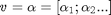

Contents
- Exploring punch hole placement in clamped square plate using PDE Toolbox
- Plate parameters, geometry & mesh
- Set up boundary condition and coefficient functions
- Loop through locations of hole in plate
- Convert 4th order PDE to Elliptic PDE System
- BCs
- Coefficients
- Linear solve
- Post-process to get minimum deflection and deflection profile along plate diagonal
- Calculate minimum deflection across all design points
Exploring punch hole placement in clamped square plate using PDE Toolbox
This example is based on the reference: http://www.mathworks.com/matlabcentral/fileexchange/34870-deflection-of-a-square-plate-calculated-with-pde-toolbox. The example -
- Explores the variation of minimum (max(abs()) deflection with the position of a small "punch hole" along the diagonal of the plate. The punch hole geometry is read from an image (requires Image Processing Toolbox) or alternatively a simple circular hole can be selected
- Demonstrates an alternative solution for a 4th order PDE that avoids the numerical inaccuracy associated with the stiff-spring method of imposing BCs. The alternative solution assembles and solves for a large matrix that incorporates the FEM and constraint related matrices.

It is recommended that the reference example be looked into first for background theory on this example.
See exampleGeometries.m and exampleFormulation.m on how to use the Helper classes used in this example
Requirements: PDE Toolbox, Helper classes for PDE Toolbox
Optional: Image Processing Toolbox
% function [] = clamped
import pdetbplus.*; % import helper classes: geometryObject, boundary (lineObject etc), boundaryConditionObject and coeffsObject
Plate parameters, geometry & mesh
len = 10; % dimension of square plate % translations of punch hole along diagonal of square translations = [pointObject(0,0),pointObject(1,1),pointObject(1.5,1.5),pointObject(2,2),pointObject(2.5,2.5),pointObject(2.75,2.75)]; plateWithoutHole = geometryObject.createSquare('plate',pointObject(0,0),pointObject(0,len),'plateMaterial','outer',true,false); % collect names of plate-wall boundary segments. This is for setting BCs on the % plate-wall boundary wallBoundaryNames = cell(length(plateWithoutHole.boundary),1); for kk = 1:length(wallBoundaryNames) wallBoundaryNames{kk} = plateWithoutHole.boundary{kk}.name; end % initialize minimum deflection vector minDeflection = zeros(size(translations));
Set up boundary condition and coefficient functions
N = 2; % dimension of problem % define BC along wall-plate boundary. The particular form of the BC is % explained later function [hval,rval,qval,gval] = bcondWall(x,y,u,t) % Dirichlet condition on the boundary rval = zeros(N,1); hval = sparse(N,N); hval(2,2) = 1; % A placeholder to find row numbers in global H corresponding to % w - alpha = 0; r will be set to 0 later rval(2,1) = 1; qval = sparse(N,N); gval = zeros(N,1); end % define coefficient functions function cij = cCoeffPlate(x,y,u,ux,uy,time) % cij is an 2N x 2N matrix per the PDE Toolbox documentation cij = sparse(2*N,2*N); cij(1:4,1:4) = sparse([1 0 0 0; 0 1 0 0; 0 0 D 0; 0 0 0 D]); end function fi = fCoeffPlate(x,y,u,ux,uy,time) % fi is an N length vector fi = zeros(N,1); fi(2) = pres; end function aij = aCoeffPlate(x,y,u,ux,uy,time) % aij is an NxN matrix aij = sparse(N,N); aij(1:2,1:2) = [-1 1;-D D]; end
Loop through locations of hole in plate
for k=1:length(translations)
plate = plateWithoutHole;
useImage = true; % set to false to use simple geometry (does not require Image Processing Toolbox)
if useImage
% create geometry from punch hole pattern specified by image (requires
% Image Processing Toolbox)
[openings,isClockwise] = geometryObject.createGeometriesFromImage('llapr.png');
opening = openings{1};
% now that the image is created, this is scaled appropriately
% get current limits
[xmin,ymin,xmax,ymax] = opening.getLimitsXY();
% scale X limits
opening = opening.scaleX(0.15*len/(xmax-xmin));
% scale Y limits
opening = opening.scaleY(0.15*len/(ymax-ymin));
% get scaled limits
[xmin,ymin,xmax,ymax] = opening.getLimitsXY();
% translate to center of square
opening = opening.translate(pointObject(len/2-xmin-(xmax-xmin)/2,len/2-ymin-(ymax-ymin)/2));
% set interior and exterior regions
opening = opening.setInteriorExteriorRegions('outer','plateMaterial',isClockwise);
else
% use a circle instead of image for hole
opening = geometryObject.createCircle('circularHole',pointObject(len/2,len/2),1,'outer','plateMaterial');
end
opening = opening.translate(translations(k));
plate = plate + opening; % we are done with the geometry
plate = plate.translate(pointObject(-len/2,-len/2)); % center plate at (0,0)
plate.exteriorRegion = 'outer';
% one can also pass any of the options for initmesh() in PDE Toolbox.
% Below we restrict Hmax to be 1/20th of the plate dimension
plate = plate.initMesh('showMesh',false, 'numRefineMeshSteps',1,'Hmax',len/20);
% Material properties
E = 1e6; % Modulus of elasticity
gnu = 0.3; % Poisson's ratio
thick = 0.1; % thickness of plate
pres=2; % external pressure
D = E*thick^3/(12*(1-gnu^2));
Convert 4th order PDE to Elliptic PDE System
The plate equation PDE is the 4th order PDE as in (A). It will be solved with an alternative method to the "stiff-spring" method of imposing BCs.
(A)
with BCs, on the wall-plate boundary. We do not explicitly specify BC for the plate-hole boundary since that boundary has natural BCs.
We introduce an intermediate variable , to convert (A) into an elliptic or 2nd order PDE system since the PDE Toobox does not handle 4th order PDEs directly. (A) is thus equivalently represented by (B), (C) and (D).
(B)
with on the plate-wall boundary. This form is chosen to make problem well posed with Neumann conditions. On the other hand the form is singular w.r.t. Neumann conditions on  .
.
(C)
with Dirichlet BC on the plate-wall boundary:

where  is To Be Determined. is a numBoundaryNodes vector where numBoundaryNodes = # boundary nodes only on the plate-wall boundary
is To Be Determined. is a numBoundaryNodes vector where numBoundaryNodes = # boundary nodes only on the plate-wall boundary
(D)
on the plate-wall boundary. This Dirichlet BC is not enforced as a BC for (B) but instead needs to be imposed separately (because Neumann BC has already been imposed in (B)). Note that the alternative form described in (B) would have required the more unattractive prospect of setting Neumann BC to zero instead of the Dirichlet BC shown here.
New variables and equations equal to numBoundaryNodes in number are introduced in (C) and (D) respectively. Therefore the linear system corresponding to (B), (C) and (D) that we solve is

where
is a 2*numBoundaryNodes vector of Lagrange multipliers (see PDE Toolbox documentation on pdebound()),
is a numBoundaryNodes 2*numNodes matrix where if boundary node variable, otherwise.
is a 2*numBoundaryNodes numBoundaryNodes matrix where  if boundary node variable, otherwise.
if boundary node variable, otherwise.
are 2*numNodes 2*numNodes, is 2*numBoundaryNodes numNodes, is 2*numNodes and are obtained from the FEM.
BCs
bc = boundaryConditionObject(plate, N); % instantiate BC object for kk = 1:length(wallBoundaryNames) bc = bc.addBC('name',wallBoundaryNames{kk},'xyutFunction',@bcondWall); end
Coefficients
coeff = coeffsObject(plate, N); %instantiate coeffs object coeff = coeff.addCoeff('region','plateMaterial','fiFunction',@fCoeffPlate,'cijFunction',@cCoeffPlate,'aijFunction',@aCoeffPlate);
Linear solve
numNodes = size(plate.mesh.p,2);
u0 = zeros(N*numNodes,1);
[K,M,F] = coeff.getMatrices('solution',u0);
[~,~,H,R] = bc.getMatrices();
% identify boundary nodes; cannot be done before meshing! and therefore
% cannot be specified outside the main loop
boundaryNodes = [];
for kk = 1:length(wallBoundaryNames)
boundaryNodes = [boundaryNodes plate.getBoundaryNodes('name',wallBoundaryNames{kk})];
end
boundaryNodes = unique(boundaryNodes); % remove nodes common to these contiguous boundary segments
numBoundaryNodes = length(boundaryNodes);
I_w = sparse(numBoundaryNodes,size(K,2));
I_w(:,boundaryNodes) = speye(numBoundaryNodes);
I_alpha = sparse(size(H,1),numBoundaryNodes);
I_alpha(R > 0,:) = speye(numBoundaryNodes);
A = [K+M H' sparse(size(K,1),numBoundaryNodes)
H sparse(size(H,1),size(H,1)) I_alpha
I_w sparse(numBoundaryNodes,size(H,1)+numBoundaryNodes)];
B = [F;zeros(numBoundaryNodes+size(H,1),1)];
wvLambdaAlpha = A\B;
wv = wvLambdaAlpha(1:N*numNodes); % extract w and v
Post-process to get minimum deflection and deflection profile along plate diagonal
numNodes = size(plate.mesh.p,2);
minDeflection(k) = min(wv(1:numNodes,1));
fprintf('Transverse minimum deflection = %12.4e\n',minDeflection(k));
figure(1);
pdeplot(plate.mesh.p, plate.mesh.e, plate.mesh.t, 'xydata', wv(1:numNodes), 'contour', 'on');
title 'Transverse Deflection';
% plot deflection along diagonal
wxy = plate.createXYFunctionFromNodalSolution(wv(1:numNodes));
wdiagonal = @(x) wxy(x*cos(pi/4),x*sin(pi/4));
figure(3);
ezplot(wdiagonal,sqrt(2)*[-5,5]);
Transverse minimum deflection = -2.5031e-01
Transverse minimum deflection = -2.8463e-01
Transverse minimum deflection = -2.9050e-01
Transverse minimum deflection = -2.9148e-01
Transverse minimum deflection = -2.8695e-01
Transverse minimum deflection = -2.8380e-01
end
Calculate minimum deflection across all design points
[~,minIx] = min(minDeflection); fprintf('Minimum Deflection occurs for Design point #%d\n',minIx); figure(2); bar(minDeflection); title 'Minimum deflection against design point';
Minimum Deflection occurs for Design point #4
end